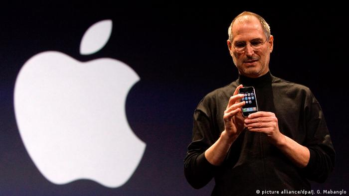

The Beginning of Apple
Apple was founded in 1976, by Steve Jobs, Steve Wozniak, and Ronald Wayne. The three men had a vision to build computers small enough for people to have them in their homes and at work. In 1976 the first computer by Apple, the Apple 1 was created by hand. A year later, the Apple 2 was launched and was a much better upgrade. In 1980, Apple released the Apple 3, the computer suffered a handful of problems and caused a lot of losses.
After the Apple 3, Apple began working on various models, but the turning point was when the iMac was released in 1998. Since then Steve Jobs helped Apple launch MacOS10, Ipod, iTunes, and the revolutionary iPhone. Steve Jobs however suffered with pancreatic cancer and passed away in 2011. After his passing, Tim Cook took over the company and have been running the company since.